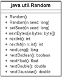

18.6 Die Random-Klasse
Neben der Zufallsmethode Math.random() in der Klasse Math gibt es einen flexibleren Generator für Zufallszahlen im java.util-Paket. Dies ist die Klasse Random, die aber im Gegensatz zu Math.random() keine statischen Funktionen besitzt. Die statische Funktion Math.random() nutzt jedoch intern ein Random-Objekt.
Abbildung 18.2: UML-Diagramm der Klasse Random
18.6.1 Objekte mit dem Samen aufbauen
Der Startwert für jede Zufallszahl ist ein 48-Bit-Seed. »Seed« ist das englische Wort für »Samen« und deutet an, dass es bei der Generierung von Zufallszahlen wie bei Pflanzen einen Samen gibt, der zu Nachkommen führt. Aus diesem Startwert ermittelt der Zufallszahlengenerator anschließend die folgenden Zahlen durch lineare Kongruenzen. (Dadurch sind die Zahlen nicht wirklich zufällig, sondern gehorchen einem mathematischen Verfahren. Kryptografisch bessere Zufallszahlen liefert die Klasse java.security.SecureRandom, die eine Unterklasse von Random ist.)
Am Anfang steht ein Exemplar der Klasse Random. Dieses Exemplar wird mit einem Zufallswert (Datentyp long) initialisiert, der dann für die weiteren Berechnungen verwendet wird. Dieser Startwert prägt die ganze Folge von erzeugten Zufallszahlen, obwohl nicht ersichtlich ist, wie sich die Folge verhält. Doch eines ist gewiss: Zwei mit gleichen Startwerten erzeugte Random-Objekte liefern auch dieselbe Folge von Zufallszahlen. Der parameterlose Standard-Konstruktor von Random initialisiert den Startwert mit der Summe aus einem magischen Startwert und System.nanoTime().
class java.util.Random |
- Random()
Erzeugt einen neuen Zufallszahlengenerator. - Random(long seed)
Erzeugt einen neuen Zufallszahlengenerator und benutzt den Parameter seed als Startwert. - void setSeed(long seed)
Setzt den Seed neu. Der Generator verhält sich anschließend genauso wie ein mit diesem Seed-Wert frisch erzeugter Generator.
18.6.2 Zufallszahlen erzeugen
Die Random-Klasse erzeugt Zufallszahlen für vier verschiedene Datentypen: int (32 Bit), long (64 Bit), double und float. Dafür stehen vier Methoden zur Verfügung:
- int nextInt(), long nextLong()
Liefert die nächste Pseudo-Zufallszahl aus dem gesamten Wertebereich, also zwischen Integer.MIN_VALUE und Integer.MAX_VALUE beziehungsweise Long.MIN_VALUE und Long.MAX_VALUE. - float nextFloat(), double nextDouble()
Liefert die nächste Pseudo-Zufallszahl zwischen 0,0 und 1,0. - int nextInt(int range)
Liefert eine int-Pseudo-Zufallszahl im Bereich von 0 bis range.
Die Klasse Random verfügt über eine besondere Methode, mit der sich eine Reihe von Zufallszahlen erzeugen lässt. Dies ist die Methode nextBytes(byte[]). Der Parameter ist ein Byte-Feld, und dieses wird komplett mit Zufallszahlen gefüllt:
- void nextBytes(byte[] bytes)
Füllt das Feld mit Zufallsbytes auf.
Hinter allen Methoden zur Erzeugung von Zufallszahlen steckt die Methode next(). Sie ist in Random implementiert, aber durch die Sichtbarkeit protected nur von einer erbenden Klasse sichtbar.
18.6.3 Pseudo-Zufallszahlen in der Normalverteilung *
Über eine spezielle Methode können wir Zufallszahlen erhalten, die einer Normalverteilung genügen: nextGaussian(). Diese Methode arbeitet intern nach der sogenannten Polar-Methode und erzeugt aus zwei unabhängigen Pseudo-Zufallszahlen zwei normalverteilte Zahlen. Der Mittelpunkt liegt bei 0, und die Standardabweichung ist 1. Die Werte, die nextGaussian() gibt, sind double-Zahlen und häufig in der Nähe von 0. Größere Zahlen sind der Wahrscheinlichkeit nach seltener.
class java.util.Random |
- double nextGaussian()
Liefert die nächste Zufallszahl in einer Gaußschen Normalverteilung mit der Mitte 0,0 und der Standardabweichung 1,0.
Ihr Kommentar
Wie hat Ihnen das <openbook> gefallen? Wir freuen uns immer über Ihre freundlichen und kritischen Rückmeldungen.
 Jetzt bestellen
Jetzt bestellen


{kind=link}